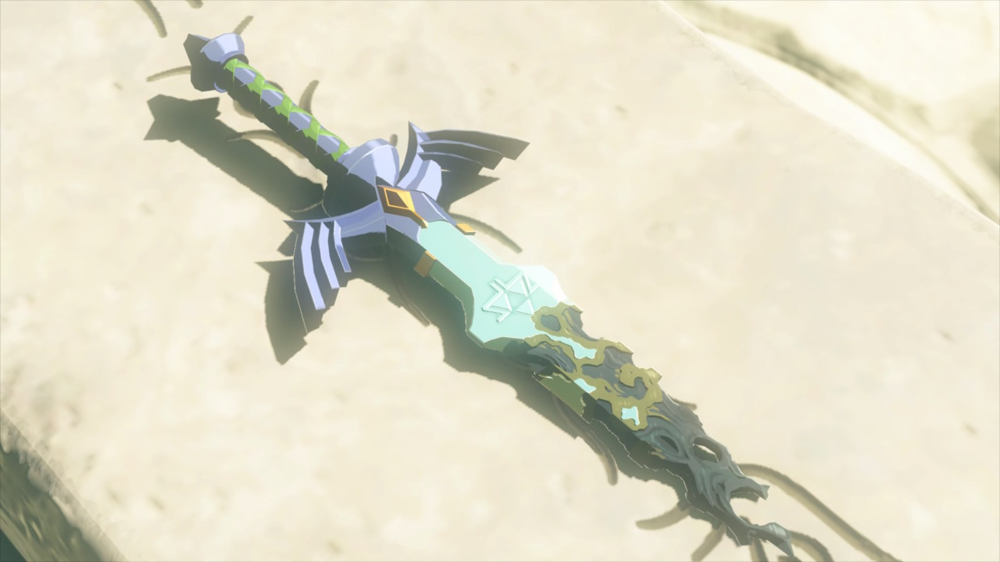
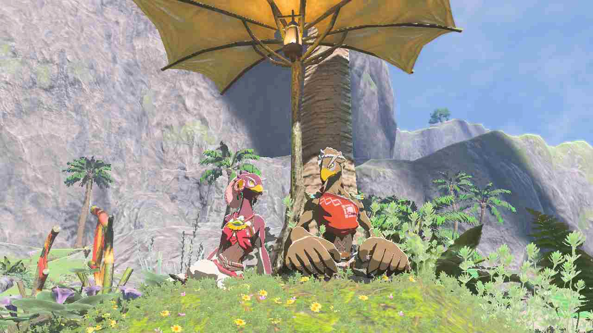

.jpg)
.jpg)
Extras

Adrien est très géné par son nez. Malgrès ce qu'il a écrit, il répète à qui veux bien
l'entendre que c'est la seule chose qui le différencie
du chevalier servant de la Princesse.
La palette de couleur du site est particulière.
Le haut du site baigne dans le soleil d'un après-midi,
le bas se trouve dans la lumière fuyante du crépuscule,
et le menu à gauche représente les ténèbres d'une nuit étoilée.
Les étoiles font de la musique quand on clique
dessus. Il y a 5 musiques a découvrir en tout.
Les étoiles du hauts sont faites pour les moments sereins,
et plus on se rapproche du bas, plus la musique devient
tendue, pour les moments stressants.
Mais saviez vous que si vous faisiez clic-droit sur ces
étoiles, vous pouviez gérer le volume, la vitesse,
et même enregistrer la musique ?
Impa a donné la queue de Lézalfos à Adrien car, sinon, il
n'aurait pas pu se battre contre les ennemis sur son chemin
et son voyage se serait arrêté la. Dans le language sheika,
on appelle ca un "Deus Ex Machina", quoi que ca veuille dire.
Au tout début, le site avait une apparence bien différente.
Les écritures étaient marrons, le fond était bleu ciel, et
le menu de gauche se trouvait en haut.
Malgrès ce qui est dit dans la section voyage, Adrien n'a
aidé Boulieh que 8 fois durant son parcours. En effet,
Boulieh pose énormément de panneau et se trouve trop souvent sur
le passage. C'est pour ca qu'à un moment,
Adrien en a eu marre de s'arrêter à chaque fois.
Il y a exactement 22 éléments de décoration, 29 images
pour la section Cartes,
177 images pour la section
Glossaire, 89 images pour la section Mystère,
132 images pour la section Voyage, et
29 images rajoutées à la fin dans un dossier
"Post-Scriptum", pour un total de 478 images.
Le script contenant l'entiereté des paragraphes du site
fait un peu plus de 35 000 mots, pour 214 000 charactères.
Adrien est extrêmement admiratif des qualitées artistiques que possède le Prince Sidon . Il a lu
les 11 pierres de mémoires réécrites par le Prince et disséminées à travers le Domaine Zora, et
s'inspire de leur style d'écriture dans chacunes de ses descriptions poétiques.
Juste au cas ou :
"Vous pouvez néanmoins publier des vidéos de jeu et des captures d'écran en
utilisant les fonctionnalités des consoles Nintendo
comme le bouton de capture de la Nintendo Switch, sans
qu'une touche personnelle ou un commentaire ne soit
nécessaire."
C'est pris sur le site officiel de Nintendo, ca devrait donc pas
poser de problèmes que vous utilisiez mes captures d'écrans.
Faites en ce que vous voulez !
Et pour les musiques ,
Je crédite Manaka Kataoka, Yasuaki Iwata, Maasa Miyoshi, Masato Ohashi, Tsukasa Usu et Hajime Wakai.
Violaine a tapé dans l'oeil d'Adrien.Mais chut,c'est un secret pour tout le monde!
Titre de la partie

Texte en dessous de l'image de titre
Texte au dessus d'un paragraphe de type gauche
Texte au centre d'un paragraphe de type gauche
Texte au centre d'un paragraphe de type gauche, en fullscreen

"Description de la photo"
Texte en dessous d'un paragraphe de type gauche
Texte en dessous d'un paragraphe de type gauche, en fullscreen
Texte au dessus d'un paragraphe de type droite
"Description de la photo"
Texte au centre d'un paragraphe de type droite
Texte au centre d'un paragraphe de type droite, en fullscreen
Texte en dessous d'un paragraphe de type droite
Texte en dessous d'un paragraphe de type droite, en fullscreen
Texte au dessus d'une image de fin
